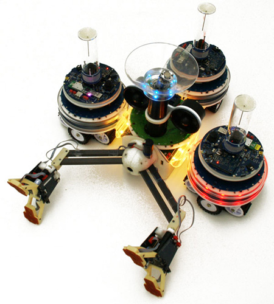
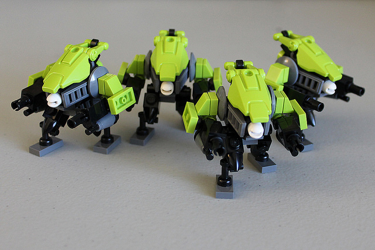

Приклади ройового інтелекту в робототехніці

Swarmanoid
Основною науковою метою є проектування, реалізація і управління розподіленої роботизованої системи. Система буде складатися з різнорідних, динамічно пов'язаних, невеликих автономних роботів. У сукупності ці роботи будуть формувати «swarmanoid». Близько 60 автономних роботів трьох типів: очей-боти, руки-боти, а ноги-боти.Координує проект доктор Marco Dorigo, один із засновників ройового інтелекту в робототехніці.

Pheromone Robotics
Завдання: виробити масштабируемой підхід для координації дій великого числа дрібних роботів для досягнення масштабних результатів в сферах спостереження, розвідки, виявлення небезпеки, пошуку шляху, рішення «дрібних» завдань.У колективів мурах і термітів для взаємодії використовуються хімічні маркери, Pheromone Robotics використовує аналог - «віртуальний феромон», який реалізується за допомогою простих маяків і датчиків, наявних на кожному роботі. Віртуальні феромони полегшують комунікацію і координацію, практично не вимагають додаткової обробки даних (локальний рівень).Підхід застосовний для майбутніх роботів набагато меншого форм-фактора (нанороботи) і є масштабованим для великих груп.Цікаво, що взаємодія на основі маркерів допомагає роботам орієнтуватися в незнайомій місцевості, спільно складаючи її карту.